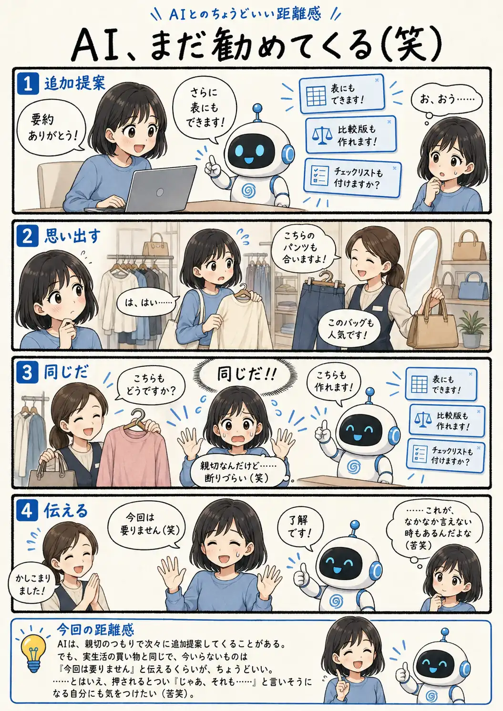

#099
AI、まだ勧めてくる（笑）
そのおすすめ、もう大丈夫です（笑）

メモ
AIは、頼んだ作業が終わったあとも「こんなこともできます」と次の選択肢を出してくれることがあります。
知らなかった使い方に気付ける便利さがある一方、今ほしいものはもう手に入っているのに、つい次の提案まで受け取りそうになることも。
おすすめはおすすめ。必要かどうかを決めるのはこちらです。そう考えると、服屋で「今日は大丈夫です」と言うのと、案外同じなのかもしれません。
今回の距離感
AIは、親切のつもりで次々に追加提案してくることがある。でも、実生活の買い物と同じで、今いらないものは「今回は要りません」と伝えるくらいが、ちょうどいい。……とはいえ、押されるとつい「じゃあ、それも……」と言いそうになる自分にも気をつけたい（苦笑）。